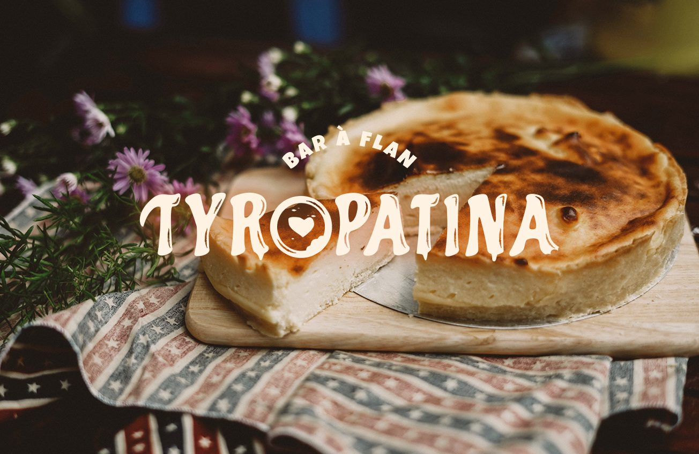
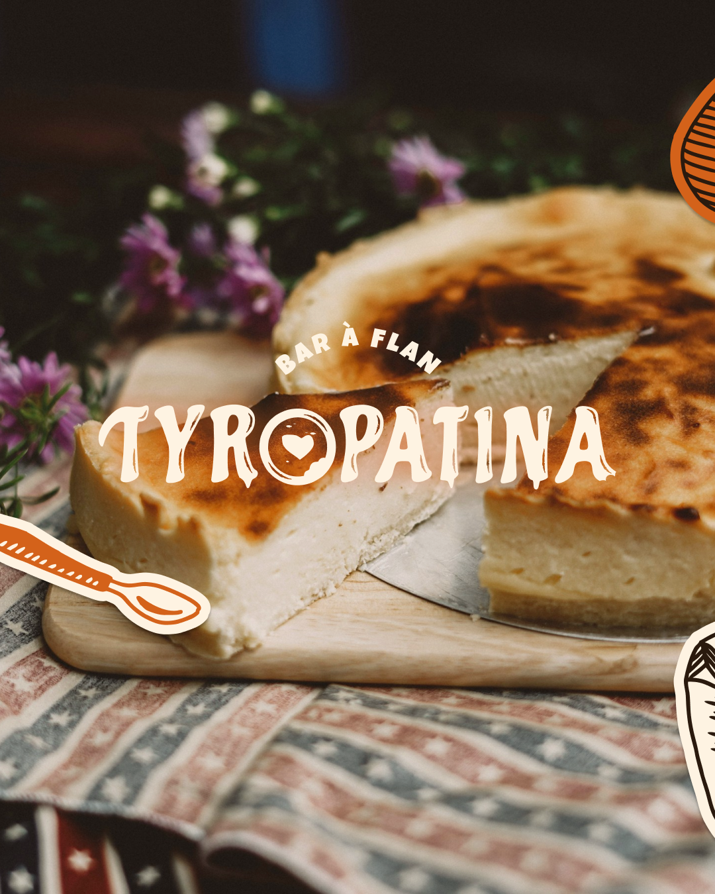
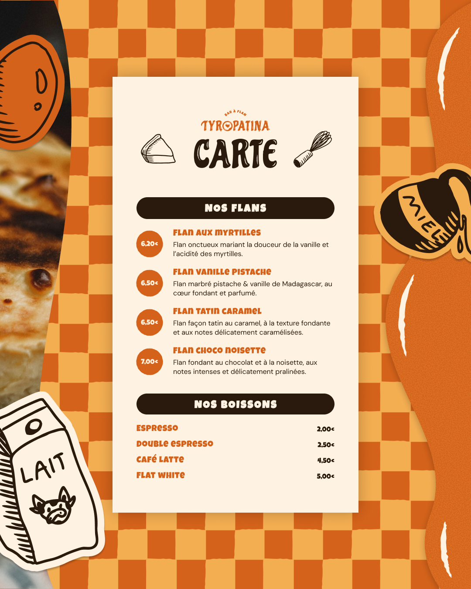
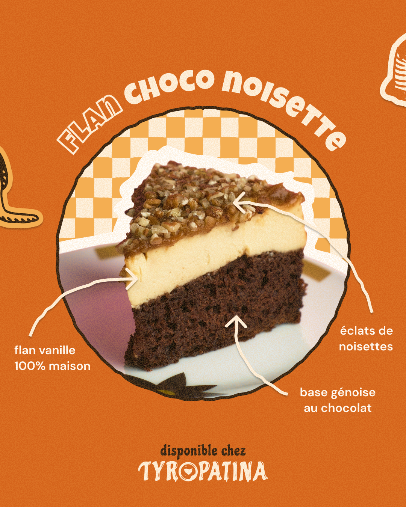
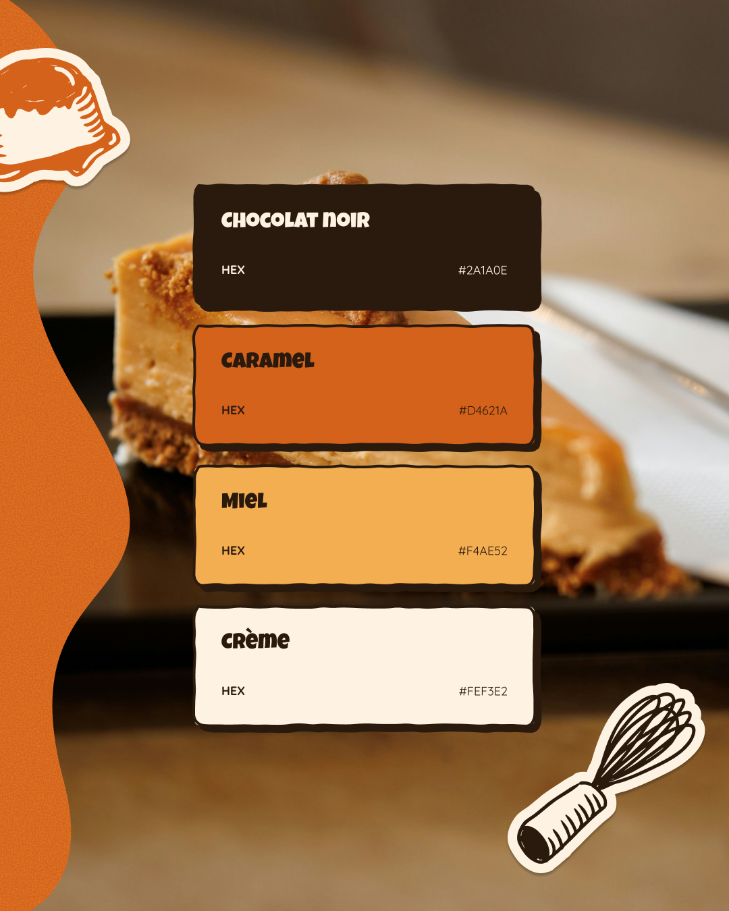
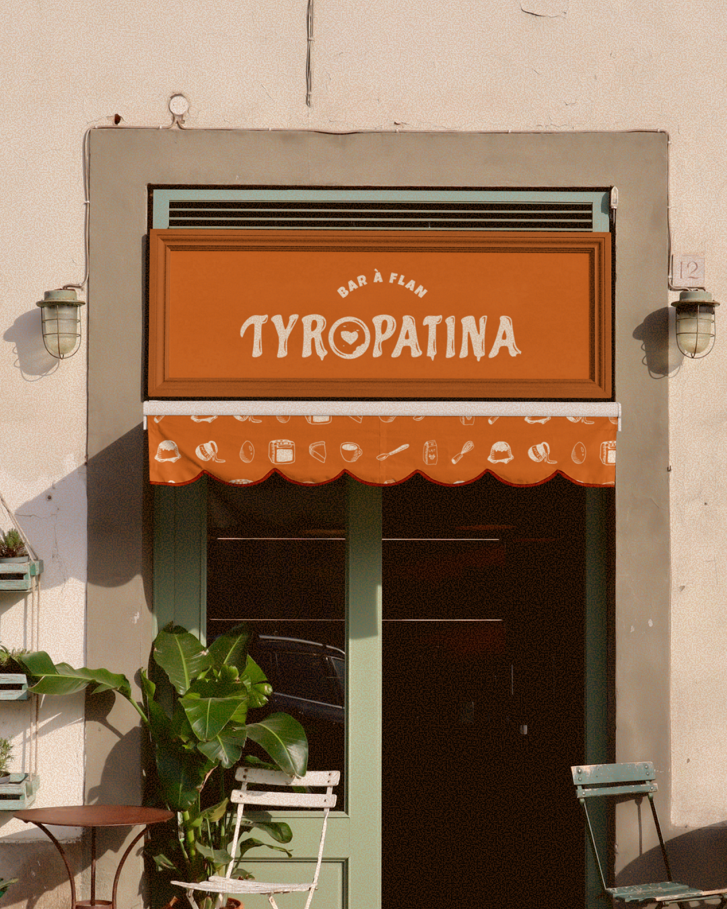
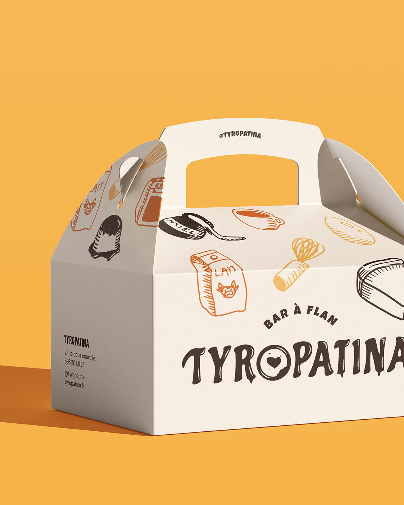
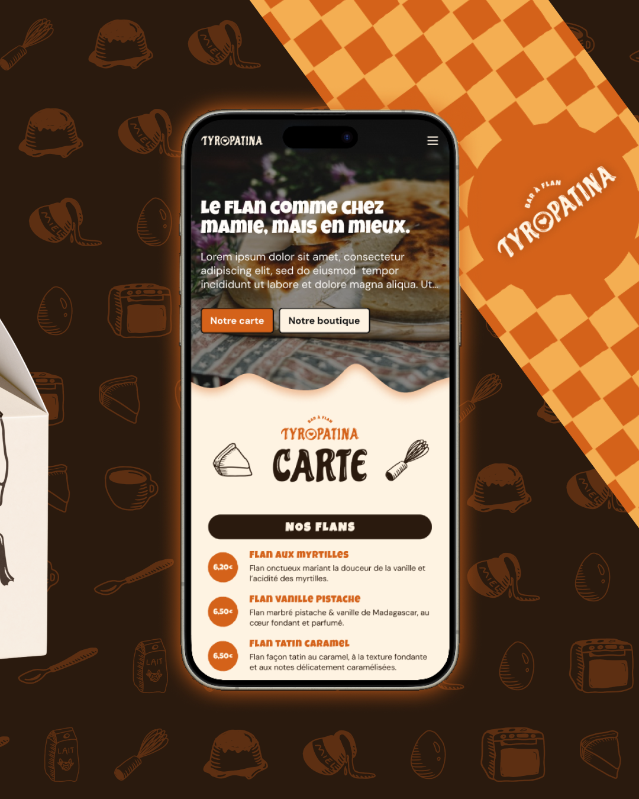
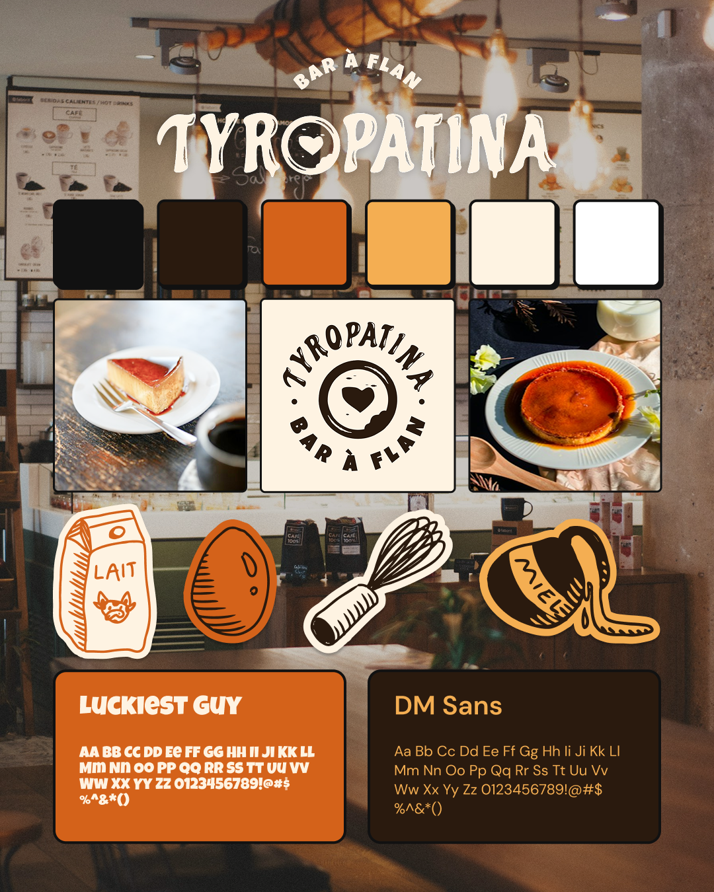

Tyropatina
Création d'identité visuelle pour Tyropatina, un bar à flan fictif à la croisée entre tradition et gourmandise.
- Bar à flan
- Café

Présentation
Après des années à chercher le flan parfait, Léa a fini par abandonner. Enfin… abandonner de chercher. Passionnée de flan depuis toujours, elle rêve d'un endroit où cette pâtisserie ne serait plus reléguée au fond d'une vitrine entre deux éclairs et trois tartes aux pommes. Un endroit où le flan serait la star. Elle découvre alors que le flan a une histoire bien plus ancienne qu'elle ne l'imaginait. Dans l'Antiquité, les Romains préparaient déjà une recette à base d'œufs et de lait appelée Tyropatina, considérée comme l'une des ancêtres du flan. Un bar entièrement consacré au flan. Des grands classiques, des créations de saison, des associations improbables, des parts à emporter, à partager ou à dévorer sur place.
Brief : Webrief.fr
Objectifs
- Créer une identité visuelle à la croisée entre tradition et gourmandise, à l'image de la marque.
- Créer un site internet en adéquation avec l'identité visuelle définie.







